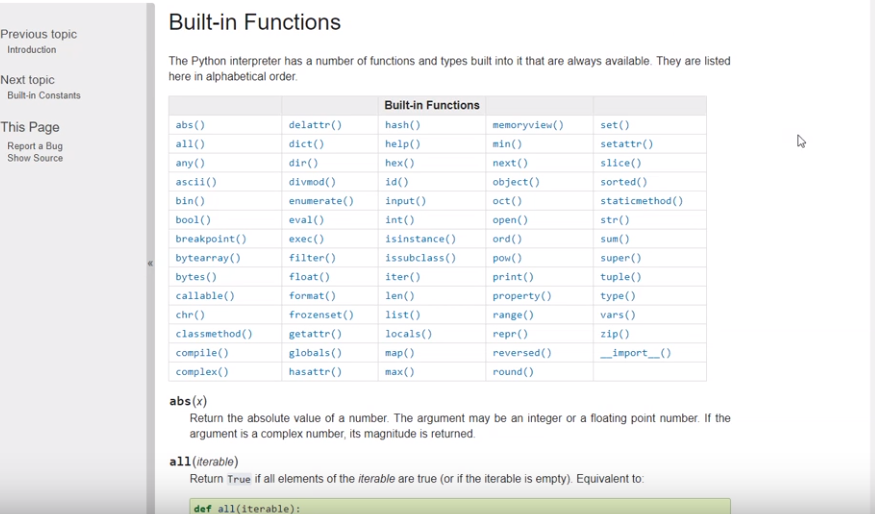
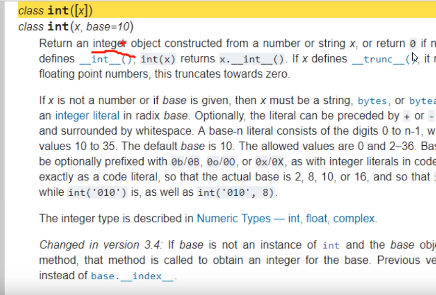
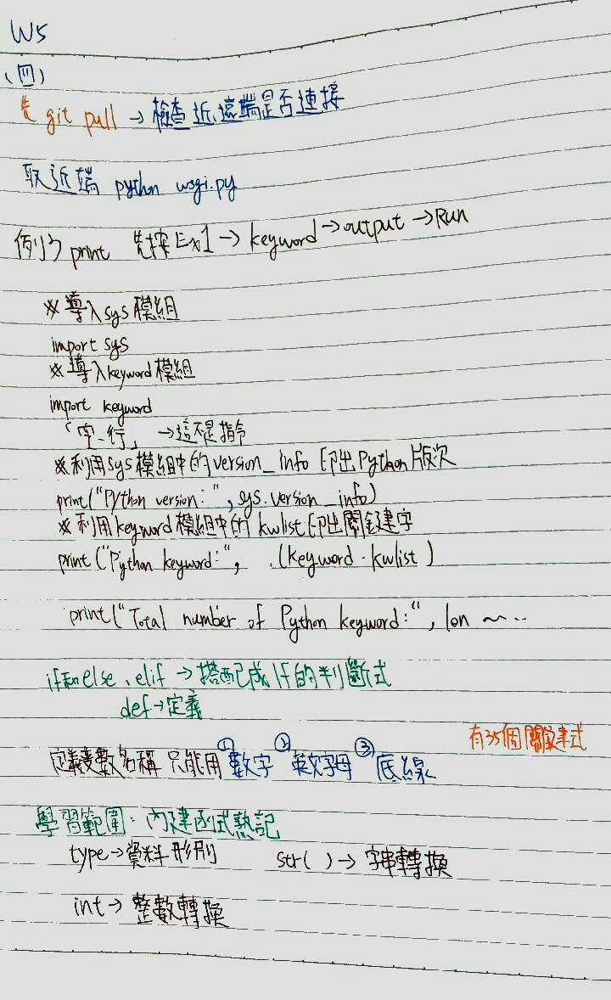

MDE-03成果紀錄
Home
Site Map
reveal
blog
介紹Github的操作說明
什麼是CMSimfly
甚麼是python
python術語講解
Python介紹
基本設定
創建Github帳號
設定Proxy與Chrome代理主機設定
指令操作
錯誤修正
上學期內容
Week1
Week2
Week3
week4
week5
week6-0
week6
week7
week8
week6 <<
Previous
Next
>> week8
week7
學習範圍:內建函式熟記。

且瞭解其中含意。

先觀察
6-0
的程式碼，裏頭有些限制必須了解。

熟記並了解，之後程式碼自己就可以自己打了<3
week6 <<
Previous
Next
>> week8